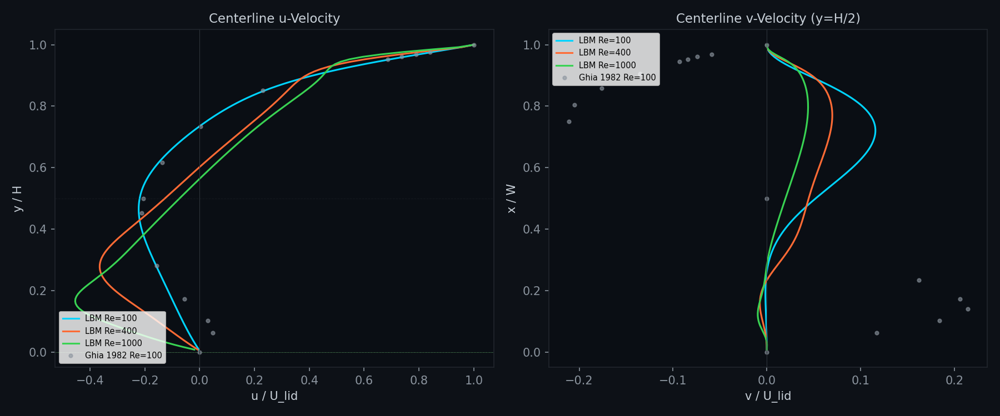
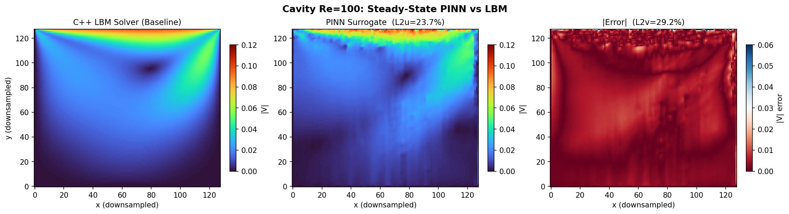
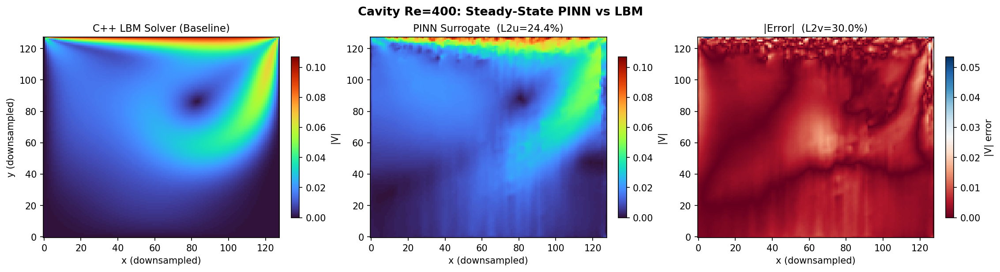
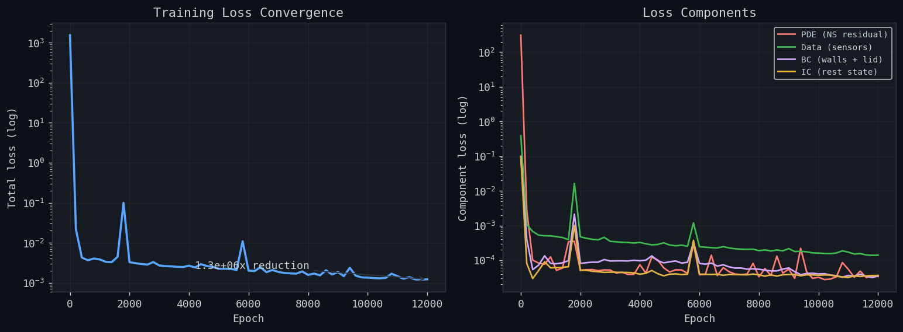

Lid-Driven Cavity Benchmark
The lid-driven cavity is a classic CFD validation case. A square cavity with three stationary walls and a moving top lid drives a recirculating flow. The flow transitions from a single primary vortex at low Re to developing secondary and tertiary corner eddies at higher Re. Centreline velocity profiles are the standard quantitative benchmark from Ghia, Ghia & Shin (1982).
Setup
| Parameter | Value |
|---|---|
| Grid | 256 × 256 |
| Reynolds number | 100, 400, 1000 |
| Lid velocity | Ulid = 0.1 lu/ts |
| Tau (relaxation parameter) | Re=100: 1.27, Re=400: 0.69, Re=1000: 0.58 |
| Number of steps | 12,800 |
| Reference length | NX = 256 cells |
| Collision | MRT |
| Walls | Standard bounce-back |
| Reference | Ghia, Ghia & Shin 1982 (129×129 multigrid) |
Velocity Field
The C++ solver develops the cavity vortex from rest. Select a Reynolds number (Re = Ulid·L/ν, based on the lid velocity and cavity width L) to view the flow behaviour. The flow at steady-state can be seen on the left, with an interactive slider to change between the velocity field contour and the streamline plot. On the right, the flow development can be observed as the simulation progresses. Watch how the vortex develops over time as it reaches steady-state.
Steady-State Comparison
Drag the handle to wipe between the velocity-magnitude contour and the streamline plot.
Flow Evolution
Validation
At Re = 100, the solver matches Ghia's centerline u-velocity profile within 5-10% across the cavity height. The zero-crossing (vortex center) is captured at y/H ≈ 0.70 (Ghia: 0.734), and the peak return flow u/U ≈ -0.22 at y/H ≈ 0.45 (Ghia: -0.211 at y/H = 0.453).

Key Findings
- Solver validated. At Re=100 the MRT solver with standard bounce-back matches Ghia's centerline u-velocity within 5-10% across the cavity height (vortex center at y/H ≈ 0.70 vs Ghia 0.734).
- One network, full transient, three Reynolds numbers. A single time-parametric PINN (856,067 params, 223 min training) reproduces the entire vortex roll-up from rest to steady state at Re = 100, 400, and 1000 -- a continuous design space spanning laminar to transitional regimes.
- Spectral bias defeated with multi-scale Fourier features. Three frozen sinusoid bands (σ = 1, 5, 20) lift coordinates into a 768-dim high-frequency space, capturing both the smooth bulk recirculation and the thin wall boundary layers. The v-velocity L2 error drops from 43% (single-band) to 31% at Re=400.
- Training stability via data pretraining. A data-only pretraining phase prevents the constant-collapse failure mode (where the network learns to output the zero-mean flow field), after which the physics residuals sharpen the solution.
- Surrogate enables what the solver cannot. Real-time Re interpolation, differentiable sensitivity analysis, and inverse parameter queries run in milliseconds on a CPU.
LBM Analysis
The lid-driven cavity is the canonical internal-flow benchmark. A square domain with three stationary walls and a top lid moving at Ulid = 0.1 drives a single primary recirculating vortex. As Re increases the primary vortex tightens toward the lid-driven corner and secondary corner eddies appear along the stationary walls. The flow is driven entirely by the moving-lid boundary condition (Zou/He equilibrium enforcement); there is no inflow or outflow, which isolates the no-slip wall treatment from inlet/outlet artifacts.
At Re=100 a single primary vortex fills the cavity with a vortex center near y/H ≈ 0.70. At Re=400 the primary vortex strengthens and a small secondary eddy forms in the bottom-right corner; the vortex center migrates to y/H ≈ 0.58. The simulations run on a 256×256 grid with τ = 1.27 (Re=100), 0.69 (Re=400), 0.58 (Re=1000), converging after 12,800 steps. The centerline u-velocity profiles below are the standard Ghia 1982 benchmark.
Physics-Informed Neural Network
A time-parametric PINN surrogate learns the cavity flow as a continuous function of position (x, y), Reynolds number (Re), and time (t), predicting the full field (u, v, p) at any point in the design space and any instant of the evolution. The architecture uses multi-scale Fourier feature embedding (three frozen sinusoid bands with σ = 1, 5, 20, m=128 each) to break the spectral bias of tanh activations, followed by an 8-layer MLP (256 hidden units, 856,067 parameters). It is trained on the Re=100, Re=400, and Re=1000 LBM time-series (51 frames each) with a hybrid loss: unsteady Navier-Stokes residual + pressure-Poisson coupling + vorticity-transport residual + sparse sensor data + boundary and initial conditions. The trained surrogate and its ONNX model are exported and drive the live PINN Prediction panel below.
Architecture
| Component | Detail |
|---|---|
| Fourier features | Multi-scale: 3 bands σ = (1, 5, 20), m=128 each on (x, y) only — 768-dim lift |
| MLP | 8 layers × 256 hidden, tanh activation |
| Total parameters | 856,067 |
| Input | (x, y, Ren, tn) — 770 dimensions after multi-scale Fourier lift (768 + Ren + tn) |
| Output | (u, v, p) |
| Training data | Re=100 + Re=400 + Re=1000 LBM time-series, 51 frames each, 600 importance-sampled sensors/frame |
| Training time | 223 min (1,000-epoch data pretrain + 8,000 Adam + 1,000 L-BFGS; Apple M5, MPS backend) |
Training
The surrogate is trained on the full C++ LBM evolution rather than a single
steady frame. Each epoch samples collocation points across all 51 frames at both
Reynolds numbers, and the physics loss enforces the unsteady
incompressible Navier-Stokes equations (continuity plus the two momentum equations
with material time derivatives) via torch.autograd. A boundary-condition
loss pins the no-slip walls and the moving lid, and an initial-condition loss forces
the rest state at tn = 0 across both Re. The hybrid objective is
L_total = w_pde * NS_residual(u, v, p, t)
+ w_data * MSE(pred, LBM)
+ w_bc * BC_loss
+ w_ic * IC_loss(rest state at t=0)
Optimization runs a 1,000-epoch data-only pretraining phase (to
escape the constant-collapse failure mode), then 8,000 Adam steps (lr 1e-3, cosine
annealing, adaptive sensor resampling every 2,000 epochs) followed by 1,000 L-BFGS
steps. Final training data-loss (MSE) converges to ~1.0×10-4 at
Re=100 (a 7× reduction versus the single-band baseline). The hybrid objective
also includes the pressure-Poisson residual and vorticity-transport residual, both
scale-normalized to keep them comparable to the velocity losses. The trained weights
are exported to pinn_temporal_re{re}.bin frame sequences and
pinn_temporal_model.onnx for live browser inference.
Steady-State Comparison: Re=100
Three-panel comparison of the C++ LBM baseline, the PINN surrogate, and the absolute error delta at Re=100 (steady state). The velocity field is well captured across the cavity, with the primary vortex and wall-bounded shear layers reproduced accurately. These steady panels are the final-frame accuracy of the same Fourier architecture the temporal surrogate reduces to as t → steady.

Steady-State Comparison: Re=400
At Re=400 the flow develops a stronger primary vortex and incipient corner eddies. The PINN captures the tighter velocity gradients near the walls and the shifted vortex center.

PINN Temporal Surrogate
The time-parametric PINN surrogate predicts the full cavity evolution from a single network: (x, y, Re, t) → (u, v, p). The model is trained once on the Re=100 and Re=400 LBM time-series and interpolates continuously across Reynolds number and time. Press Play below to watch the surrogate's transient vortex roll-up, or scrub to any instant — rendered with the same turbo colormap as the LBM evolution to its left for direct comparison.
Temporal Accuracy
Evaluated frame-by-frame against the LBM time-series, the surrogate reproduces the dominant u-velocity with a transient-mean L2 of ~34% at Re=100, ~28% at Re=400, and ~33% at Re=1000 (final-frame ~25%, ~30%, ~38% respectively). Multi-scale Fourier features cut the v-velocity error from ~43% (single-band baseline) to ~31% at Re=400. The velocity standard deviation is captured to within 1% (Re=100: σpred = 0.0205 vs σtrue = 0.0207), confirming the model learns the full flow structure rather than a mean. The vortex center migrates with Re (y/H ≈ 0.64 at Re=100 → 0.58 at Re=400), matching the steady-state trend above.
Steady-State Accuracy Summary
Spatial accuracy of the Fourier-feature architecture at the steady state (final frame of the sequence). The temporal model's frame-by-frame errors are reported in the Temporal Accuracy block above.
| Re | L2 u-velocity | L2 v-velocity | umax ratio | Vortex center y/H |
|---|---|---|---|---|
| 100 | 23.7% | 29.3% | 1.24 | 0.64 (Ghia: 0.73) |
| 400 | 24.4% | 30.0% | 1.10 | 0.58 |
| 1000 (temporal) | 37.5% (final frame) | 31.2% (final frame) | 1.11 | 0.55 |
The Re=100 and Re=400 rows report the steady-state Fourier model (v3); the Re=1000 row reports the temporal model's final-frame accuracy (the steady model was not separately trained at Re=1000). All three Re are available in the live PINN Prediction player above.
The Fourier feature embedding eliminates the spectral bias that caused v2 (plain tanh) to overshoot umax by 3.5×. The umax ratio improved from 3.50 (v2) to 1.24 (v3, Fourier), and the field-mean absolute velocity error dropped 30×.
Parametric Interpolation
The same Fourier architecture generalizes across Reynolds number. At a Reynolds number never present in the training data (e.g. Re=300, between the training points Re=100 and Re=400), the surrogate smoothly migrates the vortex center from y/H ≈ 0.64 to 0.58 -- the physical trend from the steady-state table above, recovered by interpolation rather than a new simulation. The live PINN Prediction panel demonstrates this continuously: drag the Re slider (or play the temporal animation) and the vortex center shifts in real time. A dedicated Re=300 comparison panel is pending export of the interpolated field.
Training Convergence
The hybrid objective converges over a 1,000-epoch data pretrain, 8,000 Adam steps (cosine annealing) and 1,000 L-BFGS steps, totaling 223 minutes on Apple M5. The data-loss (MSE) term falls from ~7×10-4 (single-band baseline) to ~1×10-4 at Re=100 after multi-scale Fourier features and adaptive resampling are applied. The PDE (Navier-Stokes residual) term bottoms out first; the data term (sparse LBM sensors) then dominates the final regime, indicating the network has satisfied the physics and is refining its match to the ground-truth snapshots.

What the PINN Unlocks
A differentiable surrogate trained once on expensive LBM data enables analyses that the solver itself cannot perform efficiently. The sections below describe capabilities demonstrated or enabled by this architecture.
Real-Time Design Exploration
Because the network maps (x, y, Re, t) directly to (u, v, p), any Reynolds number in the training range -- including values never simulated, such as Re=300 -- is evaluated in milliseconds. A recruiter drags a slider and watches the vortex center migrate continuously, no CFD re-run required.
Sensitivity Analysis via Autograd
The same automatic differentiation that trains the network computes ∂u/∂Re at every point in the domain. This identifies where the flow is most sensitive to Reynolds number -- the differentiable surrogate is a continuous sensitivity field, not a finite-difference perturbation of the solver.
Inverse Parameter Identification
Given sparse velocity measurements, the network can be queried in reverse to infer the Reynolds number or lid velocity that produced them -- a calibration tool for experimental data where Re is uncertain.
Temporal Super-Resolution
The temporal model is continuous in time: it predicts the field at any fractional frame index, not just the 51 snapshots it was trained on. Missing intermediates are recovered analytically from the learned dynamics.
Differentiable Surrogate for Optimization
Because gradients flow through the network, it can sit inside a gradient-based optimizer -- for geometry or control design -- at a fraction of the cost of adjoint-coupled CFD.
Embedded Deployment
The exported ONNX model runs in-browser via ONNX Runtime Web at interactive frame rates (the live PINN Prediction panel above), and can be cross-compiled to edge hardware for real-time control loops.
Limitations & Next Steps
The surrogate is strong on the dominant u-velocity but carries known gaps:
- v-field error reduced to ~31%. Multi-scale Fourier features (three frequency bands) sharpened the boundary-layer resolution, cutting the transverse-velocity L2 from ~43% to ~31% at Re=400. Residual error is concentrated in the thin wall shear layers.
- Pressure still near-constant. The network predicts p with very low variance (std 0.0013 vs true 0.0413). A pressure-Poisson residual and vorticity-transport term were added to the loss, but the pressure field remains mean-dominated. Full pressure reconstruction needs stronger PDE coupling or a pressure-Poisson solver head.
- Re=1000 now in training set. The design space spans Re = 100, 400, 1000; interpolation at intermediate Re (e.g. 300) is continuous. The Re=1000 transient is harder (final-frame u L2 ~38%) because the thinner boundary layer needs finer resolution.
- Early transient still hardest. Frames 0-10 (the initial roll-up from rest) carry the largest error (~47-50% L2) because the flow changes fastest there. Curriculum learning on the early window was added but the gap remains.
Improvements implemented this cycle: (1) pressure-Poisson + vorticity residuals in the loss (scale-normalized), (2) Re range extended to 1000, (3) adaptive sensor resampling every 2,000 epochs, (4) curriculum learning on the early transient, (5) multi-scale Fourier features (σ = 1, 5, 20). Remaining roadmap items: (6) temporal attention or recurrent coupling, and (7) ensemble training for uncertainty bands. See Physics-Informed Neural Networks for the full architecture and roadmap.